台灣是獨特，與眾不同的寶島，不同於世界其它地方的地理山脈，單單是在36,193平方公里之中，山的密度全世界第一，台灣超過3,000公尺的山就有268餘座，在親近台灣高山，林相變化可含蓋低中高海拔植物，不同季節會看到不同變化，其美景總是讓人流連忘返，今天我們就來談談如何切入爬台灣高山百岳...因為山就在哪裡，所以只為你而來...
百岳初階：
「合歡山」相信一般人都有聽過，而且第一印象就是寒流來時，大家一窩蜂往那裡衝的地方，因為合歡山公路可到，因此新手可以上山測試一下是否有高山反應，進而再來評估初次爬山是否需要準備預防高山反應藥物。
初次爬山建議可先從合歡群峰之中的幾座入門，先培養興趣，欣賞高山草原美景，觸發小小的爬山魂，記得要選好天氣前往，推薦初學者可依續爬如下山岳:
- 合歡群峰 (石門山、主峰、東峰、北峰、西峰-原路來回10~12小時)
- 雪山東峰/主峰 (可安排二天一夜，需上網申請雪霸國家公園抽籤–三六九山屋)
- 奇萊南峰/南華山 (可安排二天二夜，可向林務局申請抽籤–天池山莊)
- 玉山主峰 (可安排二天一夜，需上網申請玉山國家公園抽籤–排雲山莊)
PS. 行程細節可上網查詢，或參加商業團免去一些行前安排，從活動中會認識實力相對跟自己相當的隊友，進而日後自組爬山行程會有可靠的伙伴。
個人初百岳經驗：好久好久以前，都忘了哪一年了，但確定是2009年以前，因為當時南橫公路還未斷，同學說要去高雄縣桃源鄉住民宿吃好料，爬爬山，誰知道同學跟他空特退伍的同梯爬的是南臺首岳–關山 (3668公尺)又是為百岳十峻之一，當時穿著球鞋揹著布包，同行的隊友還特別準備一個大包包裝了一顆10多公斤的花蓮大西瓜輪流揹上山，而我是第一個被輪到的人 ><"，前六百公尺我就臉色蒼白換手，更扯的事在後頭，同學揹著大西瓜攀上幾乎快垂直的岩壁，整個人快被重量拉下來的感覺，最後雖然全員完成登頂，大家也安全下山，但從那次之後，我再也沒有參加過同學的爬山的活動了......直到2012年跟著現在同事參加商業團去爬雪山東峰/主峰真正欣賞到高山美景時，才讓我真正燃起爬百岳的靈魂。
| 合歡山公路 | ||
| 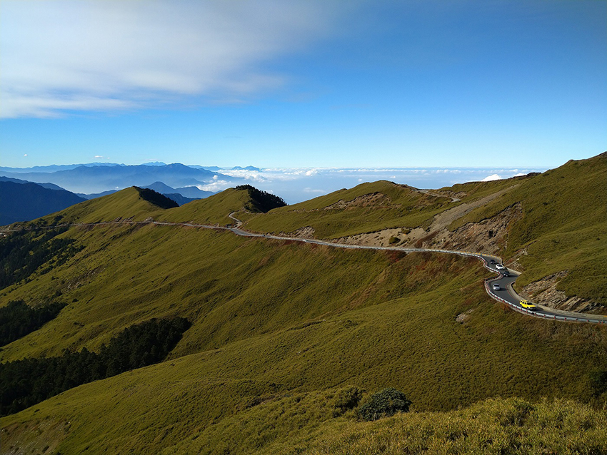 | ||
| 雪山主峰大合照 | ||
| 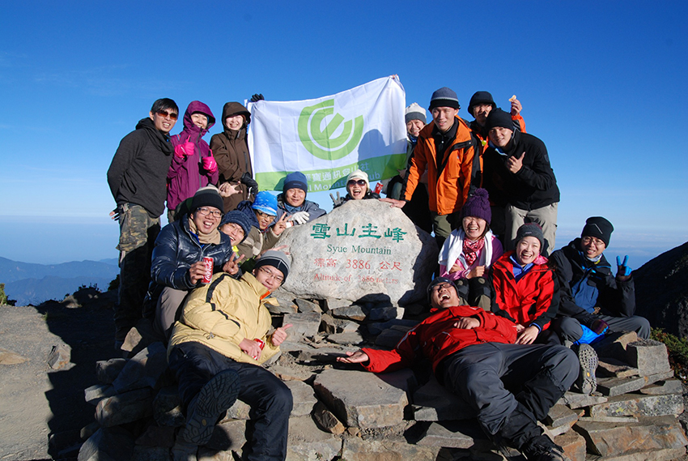 | ||
| 能高越嶺古道屯原登山口， 此行程前往奇萊南峰/南華山大合照 | ||
| 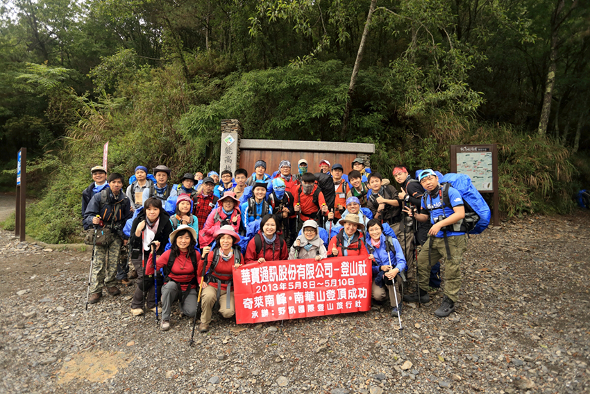 | ||
| 瞬間成為台灣最高的男人 | ||
| 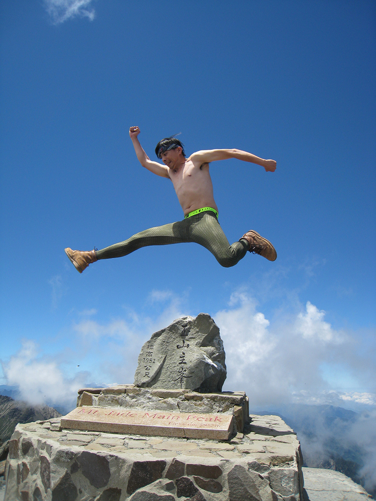 |
百岳進階：
當個人爬山魂在內心深處被喚醒時，會開始很熱衷的規劃或參與各個百岳行程，這時個人百岳經驗數也會來到10~20幾座，每次上山的停留過夜天數開始增加，由原本的過夜二天， 變成過夜三天，四天但還是原路來回登山口，因此有些進階行程可以推薦：
- 嘉明湖 (此湖有天使眼淚之稱，行程中有向陽山，三叉山二座百岳，可以上嘉明湖國家步道申請抽籤–向陽山屋或嘉明湖避難山屋， 通常安排三天二夜)
- 玉山前五峰 (玉山前峰、西峰、主峰、北峰:一仟元山景拍攝方向，東峰，需上網申請玉山國家公園抽籤–排雲山莊， 通常安排三天二夜)
- 大霸群峰 (加利山、伊澤山、大霸尖山:台幣伍百元山景，小霸尖山，需上網申請雪霸國家公園申請–九九山莊， 通常安排三天二夜)
- 南湖群峰 (百岳有審馬陣山、南湖北山：可看到台幣二仟元山景拍攝方向，南湖大山、南湖東峰、南湖南峰、巴巴山、馬比杉山，需上網申請太魯閣國家公園抽籤 – 雲稜山屋或南湖山屋， 通常安排五天四夜)
個人進階百岳經驗：從初階升級到進階最大差異在於所揹負的重量提升，初階大多以輕裝或有協作幫忙輔助搭帳篷，睡袋供應或山上供餐，天數漸漸增多後，很多山友為了節省自己荷包或有自己適用的裝備，因此開始會購入上山必要裝備，從基本的睡袋/睡墊/煮食器具到帳篷等等，因此上山的東西越來越多，越來越重，所以登山包一開始一定要買夠大(60公升~75公升)，購買前一定要當場要求負重試揹。
2014年南湖群峰四天三夜，跟著爬山app綠野遊蹤作者一同前往，當時使用85公升的登山包， 揹負20公斤，除了馬比杉山未前往，其它六座皆親近成功，雖然只有第一天及最後一天重裝，然而在這次行程中體驗到，裝備需要輕量化以及個人揹負重量的取捨，這對於往後的長程縱走及特殊地型會有很大的幫助。
| 擁抱嘉明湖 | ||
| 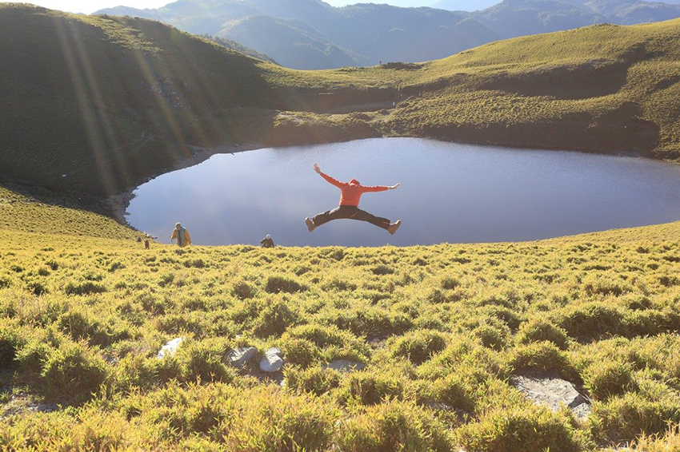 | ||
| 玉山北峰回程(台幣一仟元拍照角度) | ||
| 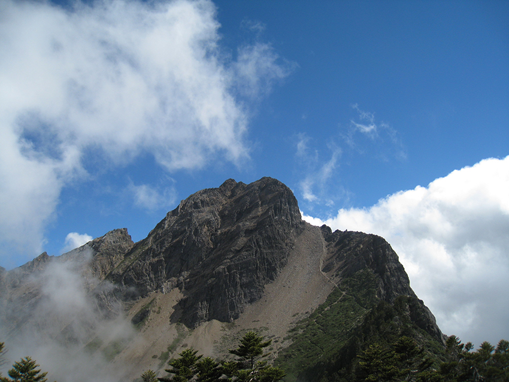 | ||
| 大壩群峰倒影 | ||
| 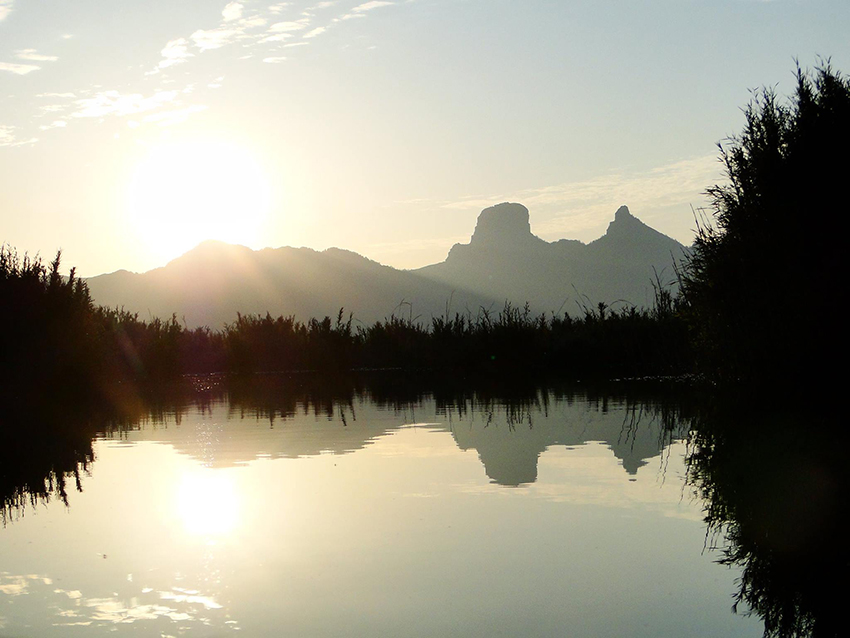 | ||
| 黑白郎君大壩尖山 | ||
| 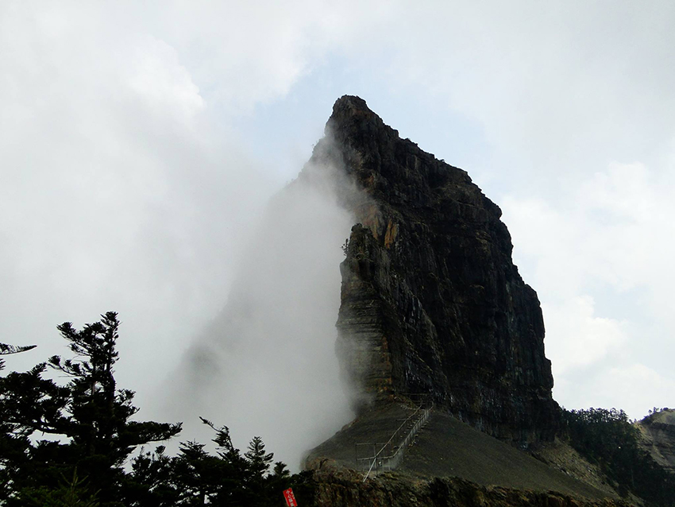 | ||
| 雪季南湖圈谷 | ||
| 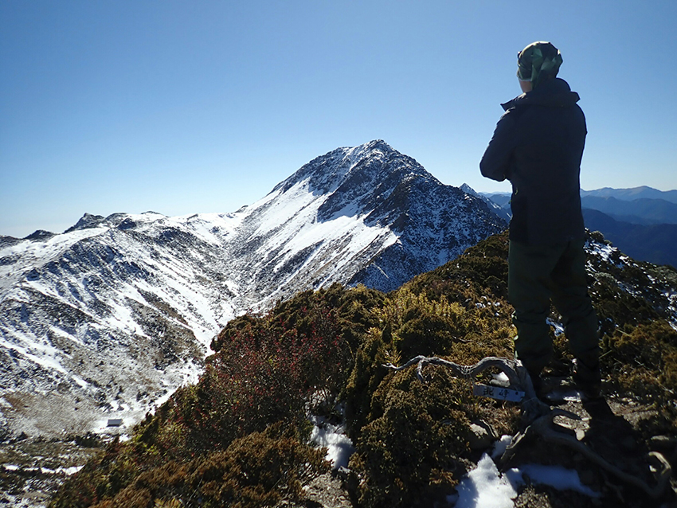 |
百岳高階：
當爬山的座數累績到40~50座時，心中會燃起很強烈的想法，就跟三國時期的曹操一樣「吾欲為國家討賊立功，慾望封侯作征西將軍」，當初開始爬山的目標也只想完成 『五岳/ 三尖/ 一奇』就足矣，慢慢接觸後，從中得到的成就感，讓自己開始有了完成台灣百岳的念頭， 因此進入了更高一階的殿堂：長程縱走(天數長，從A點進B點出，不是走原路來回)，傳統縱走路線有11段，我們就從怎切入縱走行程推薦如下：
- 北一段 (可以說是中階的南湖群峰的延伸，多1~2天增加中央尖山)
- 南二段 (嘉明湖行程的延伸，南雙頭山、雲峰、轆轆山、塔芬山、達芬尖山、大水窟山、八通關山，行程一般安排七天六夜)
- 新康橫段 (嘉明湖行程的延伸，布拉克桑山、新康山可出八通關東段-瓦拉步道)
- 北三段 (登山界又稱"能高安東軍" 前面路段為能高越嶺西段，從光被八表那裡分叉往能高山、能高南峰、光頭山、安東軍山)
2015年秋天11月縱走南二段，因上班族最現實的問題，假期不夠，所以行程安排上河時間縮短三分之一，也就是五天行程，因此隊友只有一名，本身為專業領隊，而這行程本人負重25公斤，五天走快100公里，把秀姑巒山，馬博拉斯山都撿了起來。此次經驗對能力要求極高，因此隊員有嚴格挑選，縱走天氣因素及不可控的因子更多，走到一半有問題要撤退也是困難重重，當自組隊員時，可以要求對方把自己Facebook開啟，後去看看想要參加人員的經歷或設定一些條件，來保障或確保行程更為安全。
PS. 百岳走的座數，不能完全代表爬山能力，要確認的是否有持續在爬山或運動，保持肌耐力及負重能力，往往很多出事的山友，都是間隔超久時間，然後又重新啟動爬山無法適應高強度的活動，因此近期是否有再上高山才是最主要的考量
| 中央尖山之白色金字塔 | ||
| 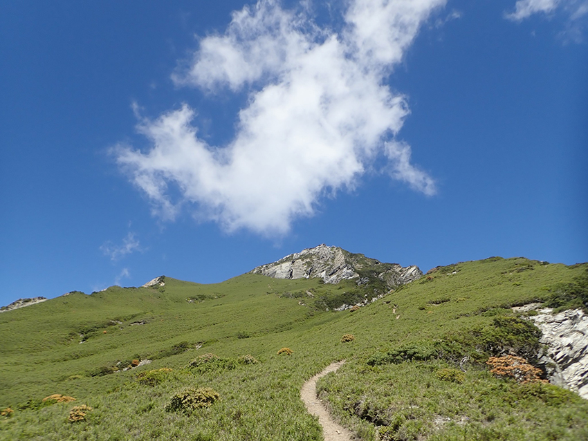 | ||
| 南二段之塔芬山騎鯊魚 | ||
| 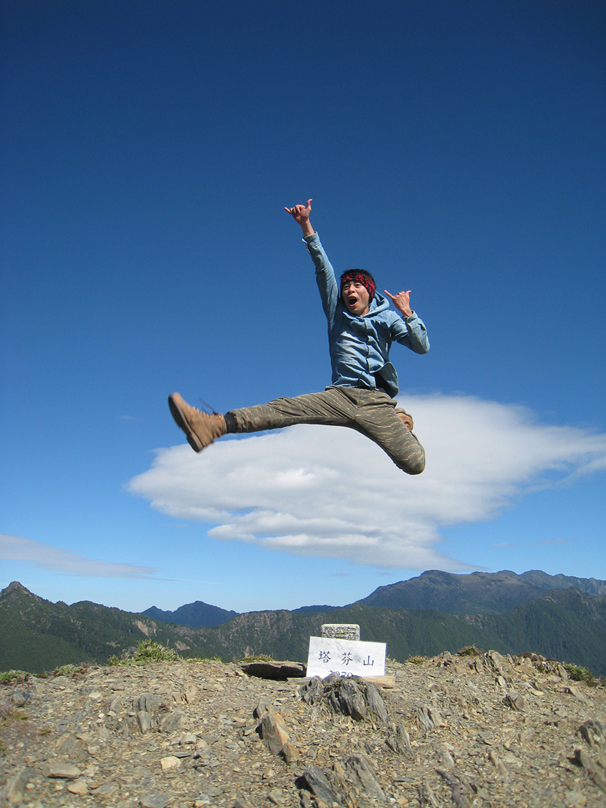 | ||
| 新康橫段扎營於布新營地 | ||
| 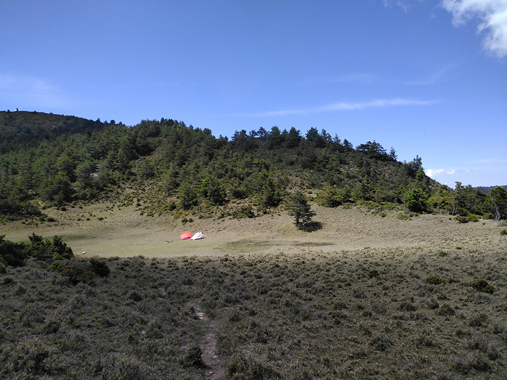 | ||
| 能高安東軍之安東軍山往三叉營地 | ||
| 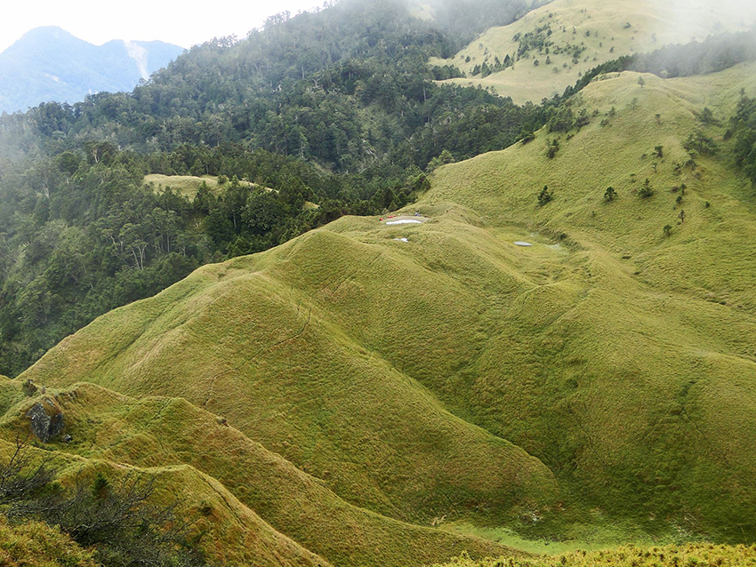 | ||
| 能高安東軍之我在光頭山崩壁 | ||
| 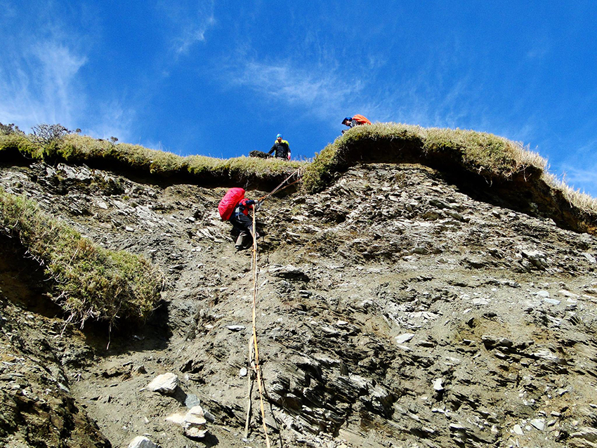 |
後記：
完百後會再次回到不同季節山的美景(比如雪季南湖大山)或者安排探勘或特殊行程， 目前跟越野選手會上山做高山訓練，爬山會讓你接觸到攝影，跑步/越野，攀岩，朔溪甚至騎腳踏車領域的同好或前輩，可說是培養不同興趣的好活動。
從一開始的無知，受到高山的震撼教育而在心中有稍許停滯接觸百岳，心中的登山魂再次被高山美景所喚醒，持續了7年終於完成台灣百岳，切勿抱著征服山岳，要以親近山岳的心態，從大自然中學習更多尊重山林，處事待人的寬闊心態。